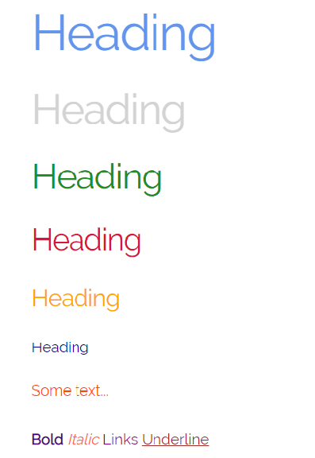

Om
Skeleton är ett gratis ramverk skapat av Dave Gamache. Det är ett minimalistiskt ramverk som passar mindre projekt där man inte kräver lika många funktioner som t.ex. Bootstrap. Perfekt för att komma igång med snabbt och enkelt. Första versionen kom maj 2011 och version 2 kom december 2014. Kort därpå kom även den sista uppdateringen.
Skeleton använder sig av ett grid-system och består endast av 400 rader kod. Vilket gör den "lätt" och snabb. Designen är elegant och funktionerna är lätta att lära sig. På denna webbplats kommer vi presentera några exempel.
Skeleton är open source och finns på Github.
Kod
Här kommer vi presentera följande funktioner:
Typografi
Skeleton använder sig av typsnittet Raleway från Google Fonts. All text är inställd med rem vilket gör att storleken anpassar sig efter root-elementet. Default för Skeleton är 1rem = 10px (2rem = 20px). Vilket gör det enkelt att komma ihåg.
Grid
Grid-systemet utgör ryggraden (pun intended) för Skeleton. Rutnät med 12 kolumner som är flytande, dvs de ökar/minskar i storlek baserat på skärmens storlek. Med det kan man skapa en snygg design som är responsiv med endast några få klass-namn.
Likt Bootstrap
skapar man en wrapper med klass-namnet: container. Maxbredden på denna wrapper är 960px. För att skapa kolumner
måste man tilldela en div med två klasser. Den första klassen specifierar kolumnens bredd: "one", "two".. "twelve".
Eller "one-third", "two-thirds", och "one-half".
Den andra klassen anger marginalerna. Det finns två klasser för detta. "column" och "columns". Man kan även
lägga till offset-klasser om man vill ha lite extra luft mellan kolumnerna: "offset-by-one", "offset-by-twelve",
"offset-by-two-thirds".
Bilden nedan visar hur många kolumner varje rad tar upp.
Knappar
Standardknapparna är förfinade på två sätt. En svartvit knapp med rundade kanter samt en knapp med blå bakgrund. Båda
har en delikat hover-effekt för att ge respons. Dessa skapar man med klasserna: "button" och "button-primary"
Gillar man inte alternativen som finns kan man kan enkelt ge knapparna egna färger.
Formulär
Med Skeleton kan man skapa snygga formulär enkelt utan att man behöver lägga ner en massa tid på att göra det snyggt. Med hjälp av grid-systemet kan man välja hur många kolumner formuläret ska ta upp, samt var varje input ska vara. Formuläret är givetvis responsivt så man behöver inte tänka på det.
Tabeller
I Skeleton stylas tabeller automatiskt utan att man behöver ge taggar klassnamn. Genom att skriva vanlig HTML-kod blir resultatet snyggt och responsivt. Det är en bra grund som man kan förfina själv med färger och effekter.
Listor
Listor har en enklare stil. Sorterade listor använder cirklar medans sorterade listor är numrerade, precis som vanligt.
Media Queries
Skeleton använder media queries för att hantera grid-systemet. Det finns även tomma queries där man själv kan skriva sin egen kod för att göra sin sida mer responsiv. Media queries utgår från mobile first då min-width används.
- Mobile: @media(min-width:400px)
- Phablet: @media(min-width:550px)
- Tablet: @media(min-width:750px)
- Desktop: @media(min-width:1000px)
- DesktopHD: @media(min-width:1200px)
Varför Skeleton?
Skeleton följer 3 principer: Responsiv design, snabb och okomplicerad. Det är enkelt att ladda ner och du kan börja koda direkt. Om du vill skapa en enkel och responsiv sida som använder grid-systemet, är Skeleton perfekt.
Fördelar:
- Snabb
- Responsivt
- Lätt att lära sig
- Bra grund för egen design
- Använder de mest användbara funktionerna
Nackdelar:
- Inga fler uppdateringar
- Ej för större projekt
- Skelephobia
Exempel på sidor som använder Skeleton: cssanimation.rocks, archivesalive.co.uk och getskeleton.com